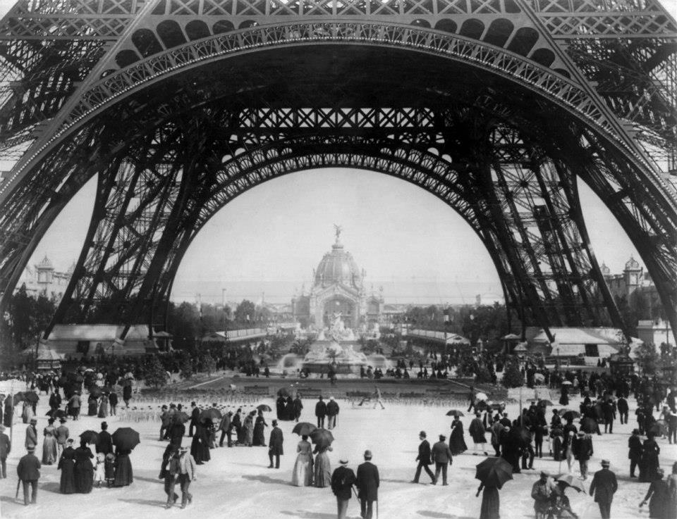
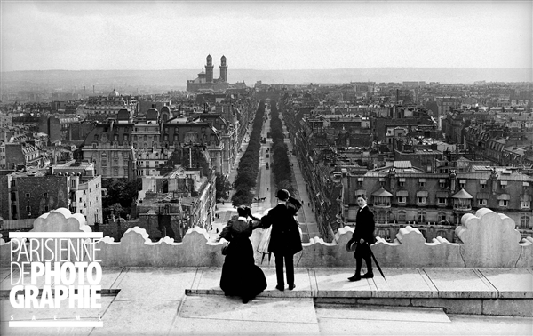

Paryż przełomu wieków
Paryż jest ciężkim, męczącym miastem, miastem budzącym niepokój… Rodin zaś jego wielkim, spokojnym, potężnym zaprzeczeniem.
— Rilke w liście do Ottona Modersohna

L’Arc de Triomphe de la Victoire, Place du Carrousel, rok 1900
O, tysiąc rąk budowało ten mój lęk, aż z maleńkiej zapomnianej wioszczyzny wyrosło wielkie miasto, w którym dzieją się rzeczy nie do opisania.
Bez przerwy rósł on we mnie i wyrywał z mej duszy spokój jak cichą zieleń, że już nic więcej odczuwać nie mogłem. Rósł on już w czasach Westerwede, z tamtejszych smutnych warunków życia, z ciężkich godzin wznosił całe gmachy i ulice. A gdym się znalazł w Paryżu, o, jakże szybko się wtedy rozrósł!
— Rilke w liście do Lou Andreas-Salomé, przeł. W. Markowska
Paryżanie spacerujący po terenach Wystawy Światowej z roku 1889
Jestem w Paryżu, kto to słyszy, cieszy się, na ogół zazdroszczą mi ludzie. Mają rację.
Wielkie miasto, duże, pełne pokus osobliwych. Sam przyznać muszę, że im uległem w pewnej mierze. Sądzę, że tego inaczej nazwać nie można. Uległem tym pokusom, a to spowodowało pewne zmiany, może nie w charakterze moim, ale w poglądzie na świat, w każdym razie w moim życiu… Świat zmieniony. Życie nowe, pełne nowych znaczeń. Trochę trudno mi w tej chwili, ponieważ wszystko jest zbyt nowe…
— Rilke na kartach Maltego, przeł. W. Hulewicz
Fotografia Roger-Violleta z roku 1899, przedstawiająca ówczesny widok z Łuku Triumfalnego na Avenue Kléber; w tle dawne zabudowania Trocadéro, zburzone w roku 1937 z okazji wystawy światowej, dziś stoi w tym miejscu Palais de Chaillot.